Zur Startseite
Zur Navigation springen
Zum Inhalt springen
Login / Lernen
Registrieren
Shop
Warenkorb
Über quowadis
Über das quowadis-Team
Häufig Gefragt (FAQ)
Impressum
quowadis-blog
AGB und Nutzungsbedingungen
Datenschutz
quowadis Krimi
Die Anatomie der Sache
EuerFeedback
Bodybit
Start
Muskeltabellen
Klinikbezug
IMPP-relevant
Body Bits
Glanzlichter
Lernatlas
Kapitel 1
Kapitel 2
Rumpf (1)
Rumpf (2)
Obere Extremität (1)
Entwicklung (7)
Schulter und Oberarm (38)
Unterarm (28)
Hand (1) (44)
Obere Extremität (2)
Untere Extremität (1)
Untere Extremität (2)
Kapitel 3
Kapitel 4
Kapitel 5
Leitungsbahnen
Organsteckbriefe
Prüfung
Lernempfehlungen
gefundene Suchergebnisse
schliessen
Kapitel 2 >
Obere Extremität (1)
Entwicklung
Gliederung und Entwicklung
Oberflächenrelief der oberen Extremität
Gliederung des Armskeletts
Entwicklung des Arms
Material der Armanlage
Bildung des Armskeletts
Verknöcherung des Armskeletts
Schulter und Oberarm
Schultergürtel
Schlüsselbein (Clavicula)
Schulterblatt (Scapula)
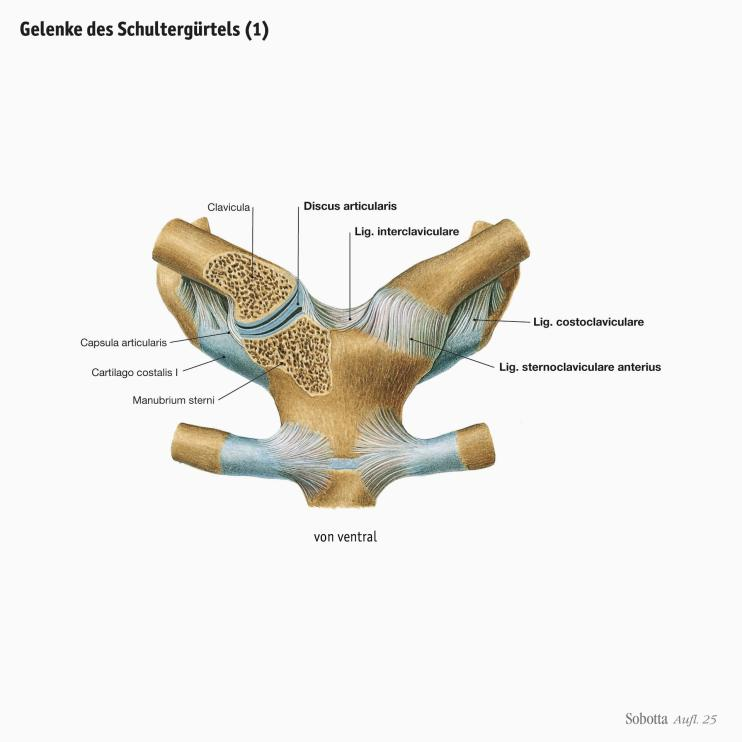
Gelenke des Schultergürtels (1)
Gelenke des Schultergürtels (2)
Stellung des Schultergürtels
Bänder des Schultergürtels
Bewegung der Schlüsselbeingelenke
Klinik:
Verletzung des Acromioclavikulargelenks (Schultereckgelenk)
Dorsale Schultergürtelmuskulatur
Dorsale Schultergürtelmuskulatur:
Mm. rhomboidei und M. levator scapulae
Dorsale Schultergürtelmuskulatur:
M. trapezius
Oberarmknochen (Humerus)
Schultergelenk (Articulatio humeri)
Schultergelenk (Articulatio humeri):
Schulterdach
Bänder des Schultergelenks (1)
Bänder des Schultergelenks (2)
Stabilisierende Bänder und Muskeln des Schultergelenks
Rotatorenmanschette
Muskeln der Rotatorenmanschette:
M. supraspinatus
Muskeln der Rotatorenmanschette:
M. infraspinatus und M. teres minor
Muskeln der Rotatorenmanschette
(von dorsal)
Muskeln der Rotatorenmanschette:
M. subscapularis
Muskeln der Rotatorenmanschette
(von ventral)
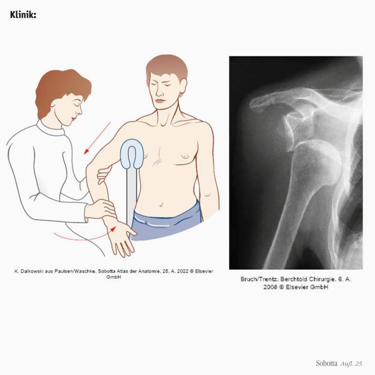
Klinik:
Verrenkung (Luxation) des Schultergelenks
Schleimbeutel (Bursen) des Schultergelenks (1)
Schleimbeutel (Bursen) des Schultergelenks (2)
Bewegungen des Schultergelenks:
Kugelgelenk
Bewegungen des Schultergelenks
Rotatoren des Schulterblatts:
M. serratus anterior
Ventrale Schultergürtelmuskeln
Ventrale Schultergürtelmuskeln:
M. pectoralis minor und M. subclavius
Muskelschleifen des Schultergürtels
Schultermuskeln:
Topographie
Ventraler Schultermuskel:
M. pectoralis major
Laterale Schultermuskeln:
M. deltoideus
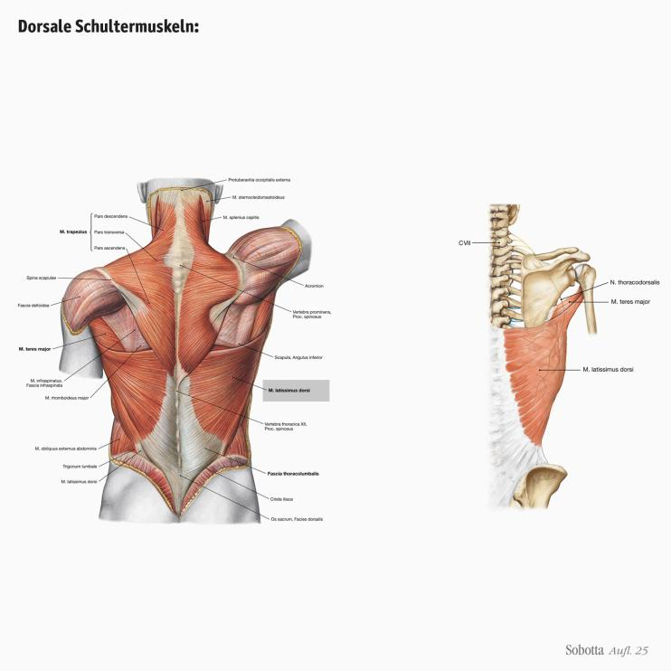
Dorsale Schultermuskeln:
M. latissimus dorsi
Dorsale Schultermuskeln:
M. teres major
Unterarm
Unterarm
Elle (Ulna)
Speiche (Radius)
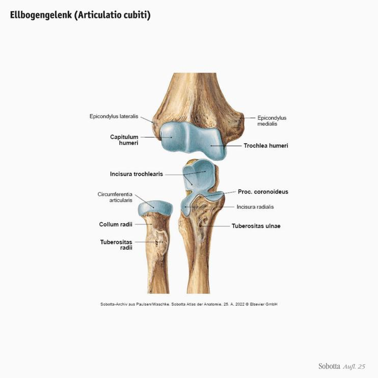
Ellbogengelenk (Articulatio cubiti)
Bänder des Ellbogengelenks (1)
Bänder des Ellbogengelenks (2)
Proximales Radioulnargelenk
(Articulatio Radioulnaris proximalis)
Bewegungen des Ellbogengelenks Dreh-Scharniergelenk (Trochoginglymus)
Klinik:
HUETER-Dreieck
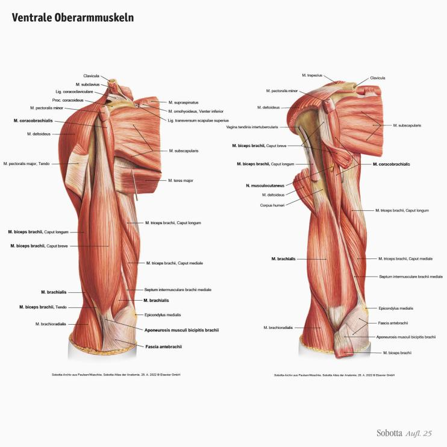
Ventrale Oberarmmuskeln
Ventrale Oberarmmuskeln:
M. coracobrachialis
Ventrale Oberarmmuskeln:
M. biceps brachii
Ventrale Oberarmmuskeln:
M. brachialis
Synergie von M. biceps brachii und M. brachialis
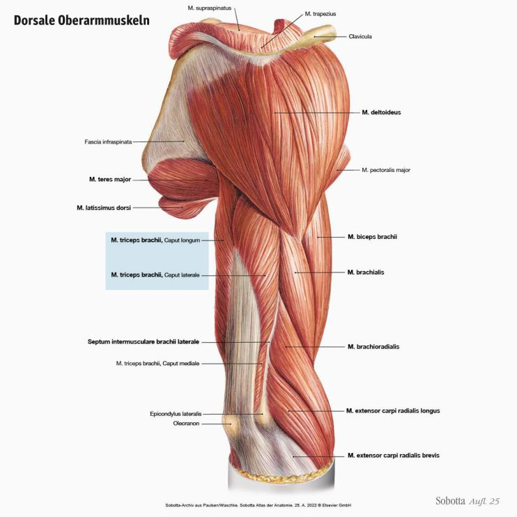
Dorsale Oberarmmuskeln
Dorsale Oberarmmuskeln:
M. triceps brachii
Dorsale Oberarmmuskeln:
M. anconeus
Pronation und Supination
Achsen für Pro- und Supination
Proximales und distales Radioulnargelenk
Pronatoren und Supinatoren (1)
Pronatoren und Supinatoren (2)
Pronatoren und Supinatoren (3)
Supinatoren:
M. biceps brachii
Supinatoren:
M. supinator
Supinator und Pronator:
M. brachioradialis
Pronator:
M. pronator teres
Pronator:
M. pronator quadratus
Hand (1)
Hand
Handskelett
Handskelett-Merkspruch
Beugemuskeln des Unterarms
Beugemuskeln des Unterarms:
oberflächliche Schicht
Beugemuskeln des Unterarms:
mittlere Schicht
Beugemuskeln des Unterarms:
M. flexor digitorum superficialis: mittlere Schicht (1)
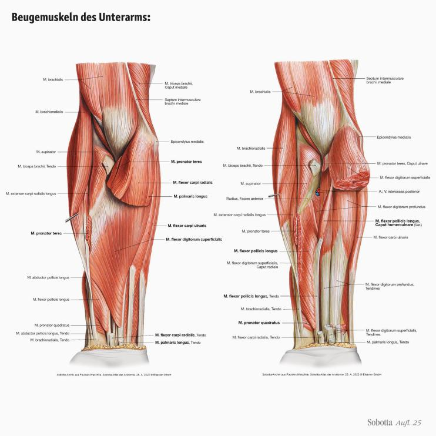
Beugemuskeln des Unterarms:
M. flexor digitorum superficialis: mittlere Schicht (2)
Beugemuskeln des Unterarms:
tiefe Schicht
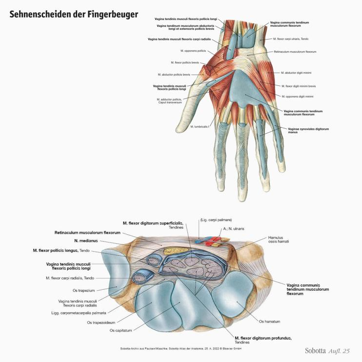
Sehnenscheiden der Fingerbeuger
Streckmuskeln des Unterarms
Streckmuskeln des Unterarms:
Radiale Gruppe
Streckmuskeln des Unterarms:
Oberfächliche Gruppe
Streckmuskeln des Unterarms:
Tiefe Gruppe (1)
Streckmuskeln des Unterarms:
Tiefe Gruppe (2)
Die 6 Sehnenfächer des Handrückens
Wirkung der Unterarmmuskeln auf die Handgelenke
Proximales und distales Handgelenk (1)
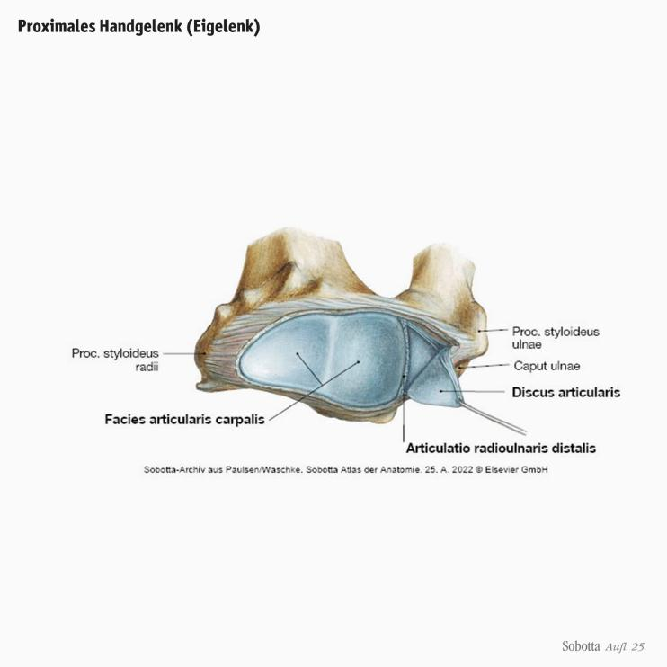
Proximales Handgelenk (Eigelenk)
Proximales und distales Handgelenk (2)
Bewegungen der Handgelenke
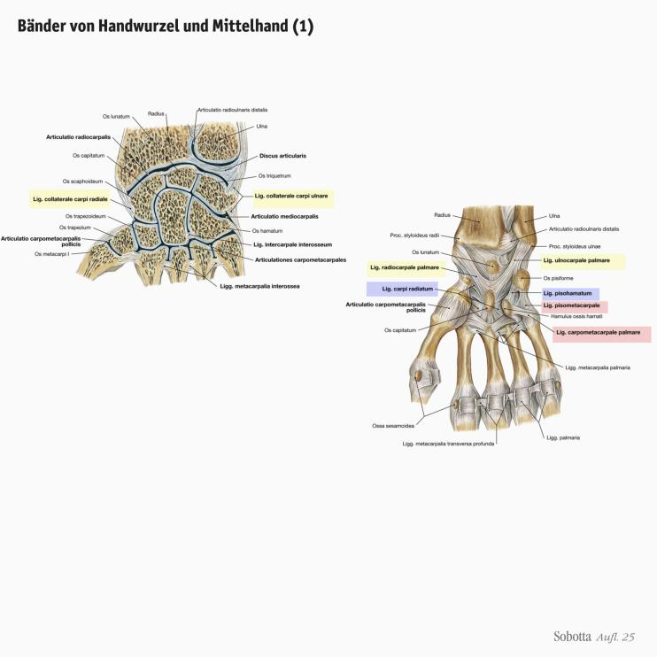
Bänder von Handwurzel und Mittelhand (1)
Bänder von Handwurzel und Mittelhand (2)
Bänder von Handwurzel und Mittelhand (3)
Gelenke der Handwurzel und Mittelhand
Fingergelenke
Bänder der Fingergelenke
Bewegungen der Fingergelenke
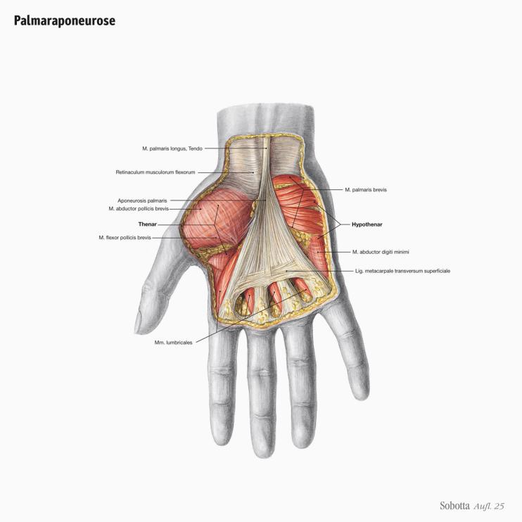
Palmaraponeurose
Muskeln der Hohlhand
Muskeln des Handtellers
Mm. lumbricales
Muskeln des Handtellers
Mm. interossei palmares
Muskeln des Handtellers
Mm. interossei dorsales
Funktion der Mm. interossei:
Abduktion und Adduktion
Muskeln der Hohlhand:
Muskeln des Daumens und Kleinfinger
Muskeln des Daumens 1
Muskeln des Daumens 2
Muskeln des Kleinfingers 1
Muskeln des Kleinfingers 2
Muskeln der Hohlhand:
Oberflächliche Schicht
Muskeln der Hohlhand:
Mittlere Schicht
Muskeln der Hohlhand:
Tiefe Schicht
Funktion der Fingerbeuger
Funktion der Fingerstrecker